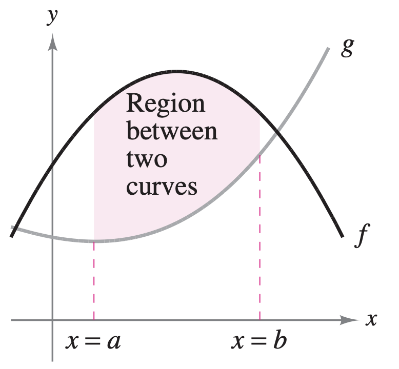
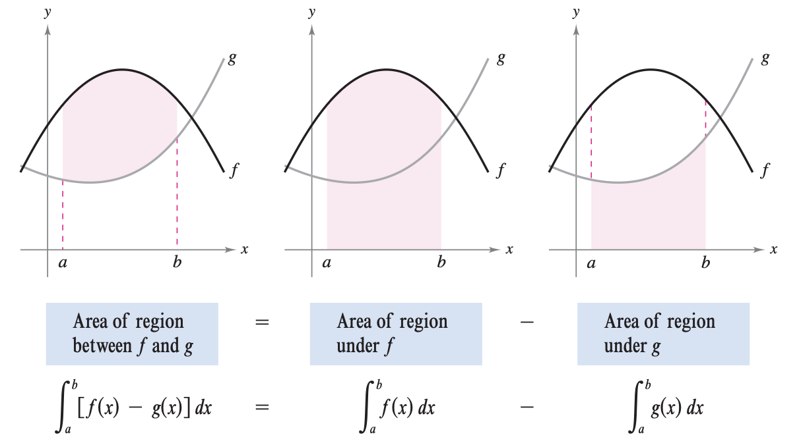
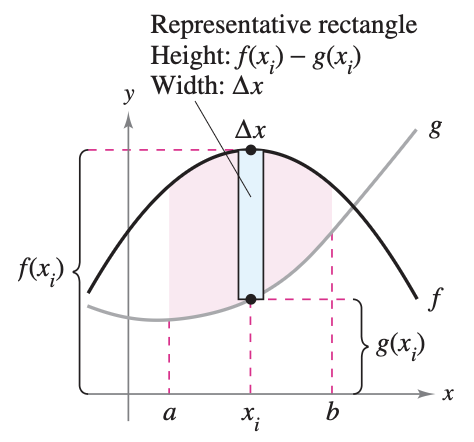
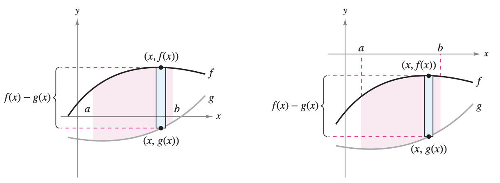
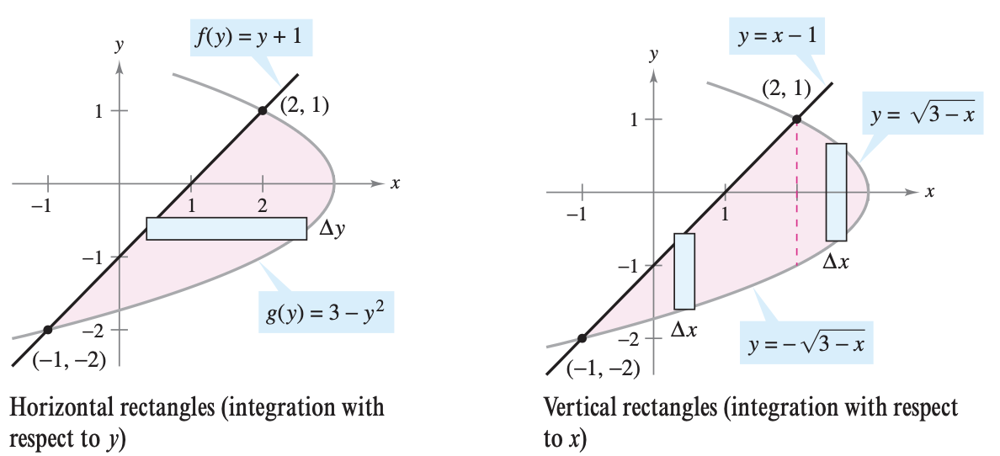
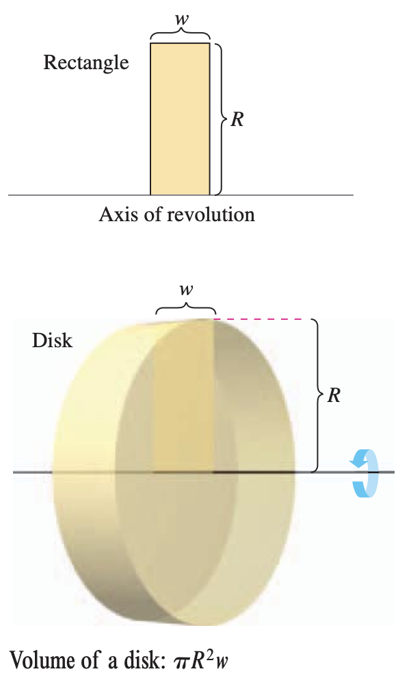
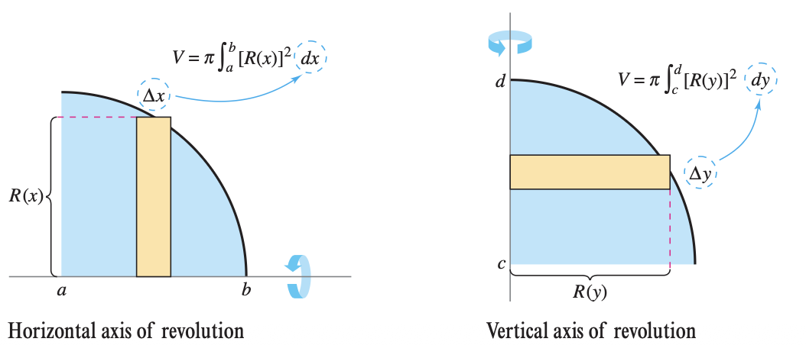
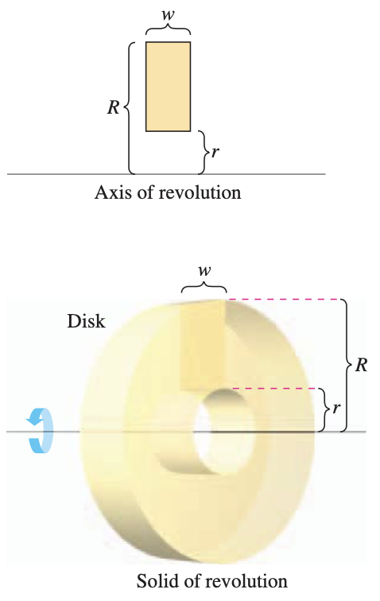
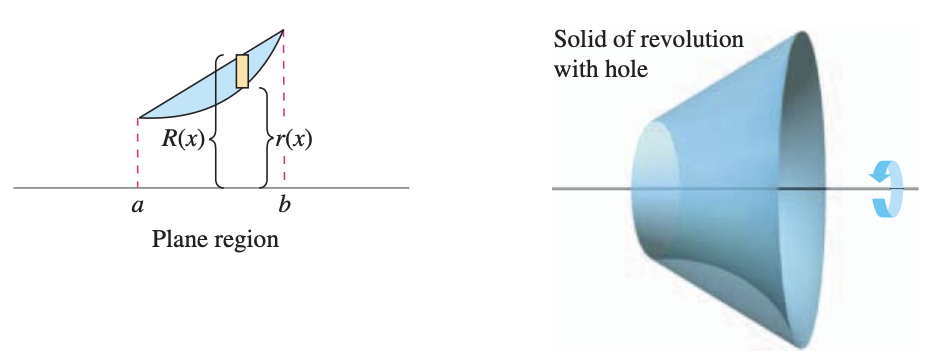
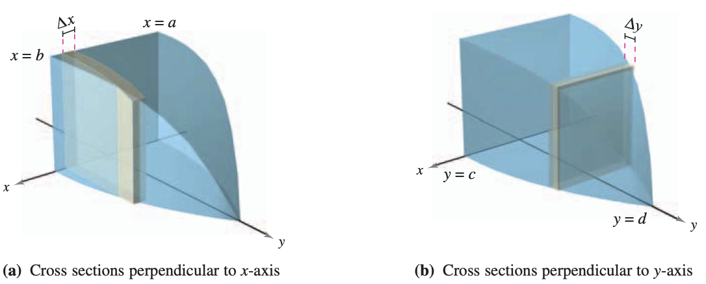

7.1 Area of a Region Between Two Curves
7.1.1 Area of a Region Between Two Curves
With a few modifications you can extend the application of definite integrals from the area of a region under a curve to the area of a region between two curves. Consider two functions \(f\) and \(g\) that are continuous on the interval \([a,b]\). If, as in Figure 7.1, the graphs of both \(f\) and \(g\) lie above the \(x\)-axis, and the graph of \(g\) lies below the graph of \(f\), you can geometrically interpret the area of the region between the graphs as the area of the region under the graph of \(g\) subtracted from the area of the region under the graph of \(f\), as shown in Figure 7.2.


To verify the reasonableness of the result shown in Figure 7.2, you can partition the interval \([a,b]\) into \(n\) subintervals, each of width \(\Delta x\). Then, as shown in Figure 7.3, sketch a representative rectangle of width \(\Delta x\) and height \(f(x_i) - g(x_i)\), where \(x_i\) is in the \(i\)th interval.
The area of this representative rectangle is: \[\Delta A_i = (\text{height})(\text{width}) = [f(x_i) - g(x_i)]\Delta x \]
By adding the areas of the \(n\) rectangles and taking the limit as \(||\Delta x|| \to 0 \, (n \to \infty)\), you obtain: \[\lim_{n \to \infty} \sum_{i=1}^n [f(x_i) - g(x_i)]\Delta x\]

Because \(f\) and \(g\) are continuous on \([a,b]\), \(f-g\) is also continuous on \([a,b]\) and the limit exists. So the area of the given region is:
\[ \begin{align*} \text{Area} &= \lim_{n \to \infty} \sum_{i=1}^n [f(x_i) - g(x_i)]\Delta x \\ &= \int_a^b [f(x)-g(x)] \, dx \end{align*} \]
In Figure 7.1, the graphs of \(f\) and \(g\) are shown above the \(x\)-axis. This, however, is not necessary. The same integrand \([f(x)-g(x)]\) can be used as long as \(f\) and \(g\) are continuous and \(g(x) \leq f(x)\) for all \(x\) in the interval \([a,b]\). This result is summarized graphically in Figure 7.4.

Representative rectangles are used throughout this chapter in various applications of integration. A vertical rectangle (of width \(\Delta x\)) implies integration with respect to \(x\), whereas a horizontal rectangle (of width \(\Delta y\)) implies integration with respect to \(y\).
7.1.2 Area of a Region Between Intersecting Curves
In the previous example, the graphs of \(f(x)=x^2+2\) and \(g(x)=-x\) do not intersect, and the values of \(a\) and \(b\) are given explicitly. A more common problem involves the area of a region bounded by two intersecting graphs, where the values of \(a\) and \(b\) must be calculated.
If two curves intersect at more than two points, then to find the area of the region between the curves, you must find all points of intersection and check to see which curve is above the other in each interval determined by these points.
NOTICE that you obtain an incorrect result if you integrate straight from \(-2\) to \(2\): \[\int_{-2}^2 [f(x)-g(x)] \, dx = \int_{-2}^2 (3x^3-12x) \, dx = 0\]
If the graph of a function of \(y\) is a boundary of a region, it is often convenient to use representative rectangles that are horizontal and find the area by integrating with respect to \(y\). In general, to determine the area between two curves, you can use:
\[ \begin{align*} A &= \int_{x_1}^{x_2} \underbrace{[(\text{top curve}) - (\text{bottom curve})]}_{\text{in variable $x$}} \, dx \\ A &= \int_{y_1}^{y_2} \underbrace{[(\text{right curve}) - (\text{left curve})]}_{\text{in variable $y$}} \, dy \end{align*} \]
where \((x_1,y_1)\) and \((x_2,y_2)\) are either adjacent points of intersection of the two curves involved or points on the specified boundary lines.
Notice that in the previous example, by integrating with respect to \(y\) you need only one integral. If you had integrated with respect to \(x\), you would have needed two integrals because the upper boundary would have changed at \(x=2\). You can see the comparison of the two integrals in Figure 7.7 below.

Exercises: Intersecting Curves
- Find the area of the region bounded by the graphs of \(y = e^x\), \(y = x\), \(x = 0\), and \(x = 2\).
- Find the area of the region completely bounded by the graphs of \(f(x) = 2 - x^2\) and \(g(x) = x^2 - 6\).
- Let \(R\) be the region enclosed by the graphs of \(y = \sqrt{x}\) and \(y = \frac{x}{2}\). Find the area of \(R\).
- Find the area of the region in the first quadrant bounded by the graphs of \(y = \sin(x)\), \(y = \cos(x)\), and the \(y\)-axis.
- Let \(R\) be the region bounded by the graphs of \(f(x) = x^3 - 3x^2 + 2x\) and \(g(x) = 0\). Find the total area of the region \(R\).
- Consider the region bounded by the graphs of \(x = y^2 - 4\) and \(x = y + 2\).
- Write an integral expression with respect to \(x\) that represents the area of the region. Do not evaluate the integral.
- Write an integral expression with respect to \(y\) that represents the area of the region.
- Evaluate the integral from part (b) to find the area of the region.
7.1.3 Integration as an Accumulation Process
In this section, the integration formula for the area between two curves was developed by using a rectangle as the representative element. For each new application in the remaining sections of this chapter, an appropriate representative element will be constructed using precalculus formulas you already know. Each integration formula will then be obtained by summing or accumulating these representative elements.
Known precalculus formula \(\implies\) Representative element \(\implies\) New integration formula
For example, in this section the area formula was developed as follows:
\(A=(\text{height})(\text{width})\) \(\implies\) \(\Delta A = [f(x)-g(x)]\Delta x\) \(\implies\) \(A=\displaystyle \int_a^b [f(x)-g(x)] \, dx\)
Conceptual Questions
Answer the following in 1-3 complete sentences.
- The Geometry of Accumulation: In the integral \(\int_a^b [f(x)-g(x)] \, dx\), we are accumulating the areas of infinitely many representative rectangles. Geometrically, what specific parts of a single rectangle do the expressions \([f(x) - g(x)]\) and \(dx\) represent?
- Area Below the \(x\)-axis: Even if two curves are completely below the \(x\)-axis, evaluating \(\int_a^b [\text{top} - \text{bottom}] \, dx\) always results in a positive physical area. Algebraically, why does this specific subtraction guarantee a positive number for the height of your rectangles?
- Crossing Curves: Suppose \(f(x)\) and \(g(x)\) intersect at \(x=0\), trading places as the “top” curve. If you evaluate the single integral \(\int_{-2}^2 [f(x) - g(x)] \, dx\) without splitting it at the intersection, why will your answer fail to represent the total area? What does this single integral actually calculate?
- Choosing \(dy\) over \(dx\): Sometimes it is much more efficient to integrate with respect to \(y\) instead of \(x\). Geometrically, what happens to your vertical representative rectangles (\(dx\)) that forces you to write multiple integrals, and how do horizontal rectangles (\(dy\)) fix this?
- Right vs. Left: For vertical rectangles (\(dx\)), we find the height using \([\text{Top} - \text{Bottom}]\). For horizontal rectangles (\(dy\)), the integrand is \([\text{Right} - \text{Left}]\). Explain why the “right” curve must be the first term in the subtraction.
7.2 Volume: The Disk Method
7.2.1 The Disk Method
In Chapter 4 we mentioned that area is only one of the many applications of the definite integral. Another important application is its use in finding the volume of a three-dimensional solid. In this section you will study a particular type of three-dimensional solid—one whose cross sections are similar. Solids of revolution are used commonly in engineering and manufacturing. Some examples are axles, funnels, pills, bottles, and pistons!
If a region in the plane is revolved about a line, the resulting solid is a solid of revolution, and the line is called the axis of revolution. The simplest such solid is a right circular cylinder or disk which is formed by revolving a rectangle about an axis adjacent to one side of the rectangle, as shown in Figure 7.8.

The volume of such a disk is: \[ \begin{align*} \text{Volume of disk} &= (\text{area of disk})(\text{width of disk}) \\ &= \pi R^2 w \end{align*} \] where \(R\) is the radius of the disk and \(w\) is the width.
To see how to use the volume of a disk to find the volume of a general solid of revolution, consider a solid of revolution formed by revolving the plane region in Figure 7.9 about the indicated axis. To determine the volume of this solid, consider a representative rectangle in the plane region. When this rectangle is revolved about the axis of revolution, it generates a representative disk whose volume is: \[\Delta V = \pi R^2 \Delta x\]
Approximating the volume of the solid by \(n\) such disks of width \(\Delta x\) and radius \(R(x_i)\) produces: \[ \begin{align*} \text{Volume of solid} &\approx \sum_{i=1}^n \pi [R(x_i)]^2 \Delta x \\ &= \pi \sum_{i=1}^n [R(x_i)]^2 \Delta x \end{align*} \]
This approximation appears to become better and better as \(||\Delta||\to 0 \, (n\to \infty)\).
Schematically, the disk method looks like this:
Volume of disk
\(V = \pi R^2 w\) \(\implies\) \(\Delta V = \pi [R(x_i)]^2 \Delta x\) \(\implies\) Solid of revolution
\(V = \displaystyle \pi \int_a^b [R(x)]^2 \, dx\)
A similar formula can be derived if the axis of revolution is vertical.
Note that in Figure 7.9, you can determine the variable of integration by placing a representative rectangle in the plane region “perpendicular” to the axis of revolution. If the width of the rectangle is \(\Delta x\), integrate with respect to \(x\), and if the width of the rectangle is \(\Delta y\), integrate with respect to \(y\).

The simplest application of the disk method involves a plane region bounded by the graph of \(f\) and the \(x\)-axis. If the axis of revolution is the \(x\)-axis, the radius \(R(x)\) is simply \(f(x)\).
Exercises: The Disk Method
- Find the volume of the solid generated when the region bounded by the graphs of \(y = \sqrt{x}\), \(y = 0\), and \(x = 4\) is revolved about the \(x\)-axis.
- Find the volume of the solid generated when the region bounded by the graphs of \(y = x^3\), \(x = 0\), and \(y = 8\) is revolved about the \(y\)-axis.
- Find the volume of the solid generated when the region bounded by the graphs of \(y = 2 - x^2\) and \(y = 1\) is revolved about the horizontal line \(y = 1\).
- Let \(R\) be the region enclosed by the graph of \(f(x) = \frac{1}{x}\), the \(x\)-axis, and the vertical lines \(x=1\) and \(x=e\). Which of the following expressions represents the volume of the solid generated when \(R\) is revolved about the \(x\)-axis? (A) \(\pi \int_1^e \frac{1}{x} \, dx\) (B) \(\pi \int_1^e \frac{1}{x^2} \, dx\) (C) \(2\pi \int_1^e \frac{1}{x^2} \, dx\) (D) \(\pi \int_1^e \ln(x) \, dx\)
- Let \(R\) be the region in the first quadrant bounded by the graph of \(y = 4 - x^2\) and the coordinate axes.
- Find the area of \(R\).
- Find the volume of the solid generated when \(R\) is revolved about the \(x\)-axis.
- Find the volume of the solid generated when \(R\) is revolved about the \(y\)-axis.
7.2.2 The Washer Method
The disk method can be extended to cover solids of revolution with holes by replacing the representative disk with a representative washer. The washer is formed by revolving a rectangle about an axis, as shown in the figure. If \(r\) and \(R\) are the inner and outer radii of the washer and \(w\) is the width of the washer, the volume is given by: \[\text{Volume of washer} = \pi (R^2 - r^2)w\]

To see how this concept can be used to find the volume of a solid of revolution, consider a region bounded by an outer radius \(R(x)\) and an inner radius \(r(x)\), as shown in Figure 7.11 below. If the region is revolved about its axis of revolution, the volume of the resulting solid is given by the washer method.
Note that the integral involving the inner radius represents the volume of the hole and is subtracted from the integral involving the outer radius.

In each example so far, the axis of revolution has been horizontal and you have integrated with respect to \(x\). In the next example, the axis of revolution is vertical and you integrate with respect to \(y\). In this example, you need two separate integrals to compute the volume.
Exercises: The Washer Method
- Let \(R\) be the region bounded by the graphs of \(y = x^2\) and \(y = 2x\). Find the volume of the solid generated when \(R\) is revolved about the \(x\)-axis.
- Let \(R\) be the region bounded by the graph of \(x = y^2\) and the vertical line \(x = 4\). Write, but do not evaluate, an integral expression for the volume of the solid generated when \(R\) is revolved about the \(y\)-axis.
- Let \(R\) be the region enclosed by the graphs of \(y = \sqrt{x}\) and \(y = x^2\). Which of the following integrals represents the volume of the solid generated when \(R\) is revolved about the horizontal line \(y = 2\)? (A) \(\pi \int_0^1 \left( (2 - x^2)^2 - (2 - \sqrt{x})^2 \right) \, dx\) (B) \(\pi \int_0^1 \left( (2 - \sqrt{x})^2 - (2 - x^2)^2 \right) \, dx\) (C) \(\pi \int_0^1 \left( \sqrt{x} - x^2 \right)^2 \, dx\) (D) \(\pi \int_0^1 \left( (\sqrt{x})^2 - (x^2)^2 \right) \, dx\)
- Let \(R\) be the region bounded by the graphs of \(y = x^2\) and \(y = 4\). Write, but do not evaluate, an integral expression for the volume of the solid generated when \(R\) is revolved about the horizontal line \(y = 5\).
- Let \(R\) be the region bounded by the graph of \(y = e^x\), the horizontal line \(y = 1\), and the vertical line \(x = 2\).
- Find the area of \(R\).
- Find the volume of the solid generated when \(R\) is revolved about the \(x\)-axis.
- Write, but do not evaluate, an integral expression for the volume of the solid generated when \(R\) is revolved about the horizontal line \(y = -1\).
Conceptual Questions
Answer the following in 1-3 complete sentences.
- Disk vs. Washer: Geometrically, what specific feature of a bounded region and its relationship to the axis of revolution forces you to use the washer method instead of the disk method?
- The Classic Algebra Mistake: When setting up a washer method integral, a common mistake is to write the integrand as \(\pi [R(x) - r(x)]^2\). Algebraically and geometrically, why is this incorrect, and why must it be written as \(\pi([R(x)]^2 - [r(x)]^2)\) instead?
- Choosing the Variable (\(dx\) vs. \(dy\)): If you are revolving a region around a vertical axis (like the y-axis or \(x=3\)), you must integrate with respect to \(y\). Geometrically, why does a vertical axis of revolution force your representative rectangles to have a width of \(dy\)?
- Shifted Axes of Revolution: Suppose you are revolving a region around the line \(y = -2\) instead of the \(x\)-axis (\(y = 0\)). How do you use the “Top \(-\) Bottom” concept to correctly write the radius \(R(x)\), and why does this result in adding 2 to your function?
- The Geometry of the Integrand: Integration is an accumulation process. In the disk method formula \(V = \int_a^b \pi [R(x)]^2 \, dx\), what specific 3D geometric shape does the expression \(\pi [R(x)]^2 \, dx\) represent before the integral adds them all together?
7.2.3 Solids with Known Cross Sections
With the disk method, you can find the volume of a solid having a circular cross section whose area is \(A=\pi R^2\). This method can be generalized to solids of any shape, as long as you know a formula for the area of an arbitrary cross section. Some common cross sections are squares, rectangles, triangles, semicircles, and trapezoids.

Exercises: Solids with Known Cross Sections
- Let \(R\) be the region bounded by the graph of \(y = \sqrt{x}\), the \(x\)-axis, and the vertical line \(x = 9\). The region \(R\) is the base of a solid. For this solid, the cross sections perpendicular to the \(x\)-axis are squares. Find the volume of the solid.
- Let \(R\) be the region bounded by the graphs of \(y = 2 - x^2\) and \(y = 0\). The region \(R\) is the base of a solid. For this solid, the cross sections perpendicular to the \(x\)-axis are semicircles. Find the volume of the solid.
- Let \(R\) be the region bounded by the graphs of \(y = e^x\), \(y = 1\), and \(x = 3\). The region \(R\) is the base of a solid. For this solid, the cross sections perpendicular to the \(x\)-axis are rectangles whose heights are twice the lengths of their bases in region \(R\). Write, but do not evaluate, an integral expression for the volume of the solid.
- Let \(R\) be the region bounded by the graph of \(y = \ln(x)\), the \(x\)-axis, and the vertical line \(x = e\). The region \(R\) is the base of a solid. For this solid, the cross sections perpendicular to the \(x\)-axis are squares. Which of the following integrals represents the volume of the solid? (A) \(\int_1^e \ln(x) \, dx\) (B) \(\int_1^e (\ln(x))^2 \, dx\) (C) \(\pi \int_1^e (\ln(x))^2 \, dx\) (D) \(\pi \int_1^e \left(\frac{\ln(x)}{2}\right)^2 \, dx\)
- Let \(R\) be the region enclosed by the graphs of \(x = y^2\) and \(x = 4\). The region \(R\) is the base of a solid. For this solid, the cross sections perpendicular to the \(y\)-axis are equilateral triangles. Write, but do not evaluate, an integral expression for the volume of the solid.
- Let \(R\) be the region bounded by the graphs of \(y = \sin(x)\) and the \(x\)-axis for \(0 \leq x \leq \pi\).
- Find the area of \(R\).
- The region \(R\) is the base of a solid. For this solid, the cross sections perpendicular to the \(x\)-axis are squares. Find the volume of the solid.
- The region \(R\) is the base of another solid. For this solid, the cross sections perpendicular to the \(x\)-axis are semicircles with their diameters across the base. Find the volume of the solid.